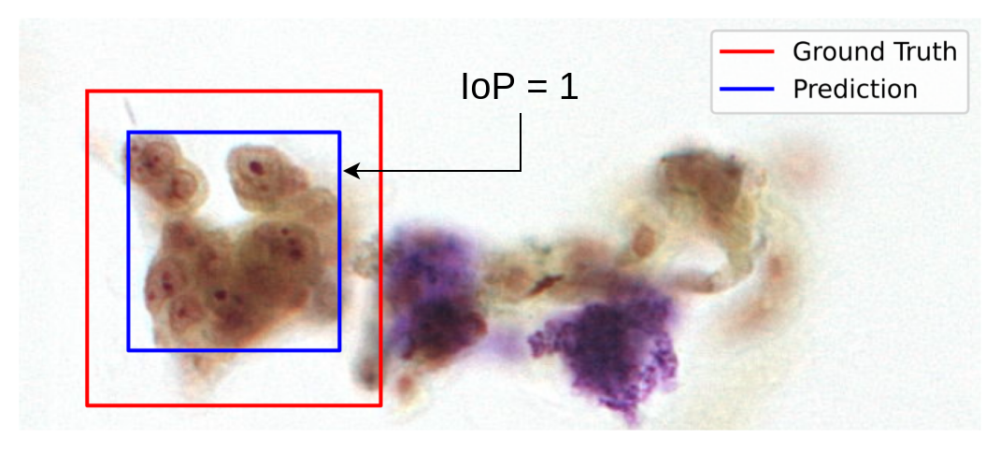

Evaluation Criteria
👨⚖ Judging
There are two phases in this competition: the online Qualification Round and the offline Final Round. In the final round, there will be judges from different academic backgrounds. Participants are expected to show maturity in the design of their algorithms, neural network, and describe their methodology.
The “juries” consist of:
- Huawei HKRC
- HKSTP
- LBP Medicine
And a prominent figure in academic research is in charge of enforcing the Terms and the Rules concerning the Contest. The Jury will review the submissions and pitching of each Team, perform scoring and ranking of the competition. At its sole discretion, the Jury may decide to disqualify participants or Teams who do not follow the Terms or the Rules.
💯 Soring for Qualification Round
Each contestant’s model will be scored based on the classification accuracy
There are two evaluation tasks to be completed, namely the accuracy and explainable tasks. To rank higher in the leaderboard, teams are encouraged to design the model to maximize individual value. This part of the explanation will introduce the classification evaluation formula.
Check out your leaderboard now!! ➡
🎯 Accuracy
The accuracy task is a computation based on the localization and classification operations. The Accuracy Score is the classification score on the dataset_3.
Intersection over Prediction, IoP
To evaluate the accuracy for identifying the position of each malignant cell. Contestants are expected to annotate the position of each malignant cell on the pathological images using bounding boxes. The Intersection over Prediction (IoP) will be used in the evaluation of the classification score.
$$ IoP = \frac{\text{area over intersection}}{\text{area of prediction}} = \frac{T \cap P} {P}\\\ T = \text{area of ground truth bounding box region}\\\ P = \text{area of predicted bounding box region}
$$
The example below shows the images of IoP:
| IoP=1 | IoP=0.6 | Multiple Io |
|---|---|---|
|  |  |
 |
Classification
This challenge uses the Free-response Receiver Operating Characteristic (FROC) at IoP > 0.5
Each bounding box is considered correct when the maximum IoP with any ground truth bounding boxes is more significant than 0.5[2]. Each class's recall values can be calculated to construct a recall vs false positive (per image) graph for every level. The precise method for calculating the recall and false positives is in the appendix.
The FROC is calculated as the average value of recall values for false positives (per image) (at ¼ , ½, 1, 2, 4, 8). Linear interpolation will be applied to determine the recall value for false positive, for value out of bound, the most recent maximum recall value will be used for interpolation.
The average recall value can then be calculated along the false positive (per image) axis. The mean FROC value of each class will be the final value of the classification score.
$$ \text{Classification Score} = \frac{1}{|M|}\sum_{i \in M}{\text{FROC}_i}
$$
Where M, refers to the classes.
Given that each ground truth box can only pair with one prediction box, and the prediction box will always pair with one of the IoP maxima to the ground truth box if the ground truth box is taken; this prediction is ignored, ie. Not considered as a false positive
📈 Explainable (XAI)
The task is based on the output of a saliency map; In the dataset_3 there are masks for the labels, which highlight specific importances of the images. Your goal is to create a saliency map to be scored with the masks. There is no dataset provided for you to optimize the explainable score because this is based on the model’s performance.
MindSpore provides an interesting toolkit called mindspore.explainerwhich accepts a model and outputs a saliency map. You need to utilize this toolkit and return the saliency map in the evaluation task.
If you have successfully completed the requirements we will score your result against the masks of the images with the AUC - ROC Curve formula.
Mindspore Explainer
🏅 Final Score
The final ranking is measured with the combination of both tasks
$$ \text{Final Score} = \text{Accuracy Score} 0.8 + \text{Explainable Score} 0.2
$$
Scoring for Final Round
The top 6 teams in the Qualification Round will be selected to participate in the Final Pitching.
Each contestant of the final round is to present the following details for their project. The following structure is a reference for the contestants; participants are free to structure their presentations. The time for the presentation is 20 mins. Pitching for 15 minutes and a Q&A session for 5 minutes.
| Details | Description |
|---|---|
| Topic/Solution Title | An appropriate title for the solution. |
| Solution Overview | Give a high-level picture to judges. Attach with a figure of the designed neural network or algorithm. |
| Solution Description | A description of each section of the overview, with details. |
| Result | Explain the result in different parameter values. |
| Business Context Uses | Describe how businesses can operate or use these models for profit or impact in the health industry. |
| Possible Improvements | Describe improvements that can be made to the solution but not achieved. |
| Additional Discovery from Data | Display the ability to fully understand the dataset, and the methodology used for knowledge discovery on the dataset. |
| Progress Report | Describe the timeline for working the competition. |
| Team Members | Describe each member’s details. |
| Acknowledgment | Acknowledge any 3rd parties, regulatory requirements that are related to the competition. |
| Appendices | Appendices for any additional information. |
*If there is more than one team with the same score in the qualification round in the top 6 ranks, both teams will qualify for the final round.
👩⚖ Judging Criteria
Scoring will be given to the participants based on the following criteria:
| Judging Criteria | Weighting |
|---|---|
| Model Design | 20% |
| Explainable AI Design | 20% |
| Innovation and Commercialization Idea | 40% |
| Presentation | 20% |